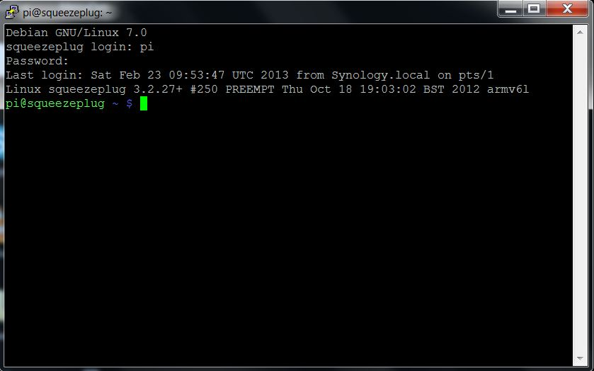

Hello,
Sorry dummy questions for a beginner. I've read the "Telnet How to" but without real answers. I created a telnet "command" and I control it through a button on the designer.
My goal is to simply shutdown an RPi (I know it can stay on 24/7 but I don't want) that works on Debian GNU/LINUX 7.0 squeezeplug, from OR using Telnet. I can log on the Pi and shut it down via telnet on Putty correctly but I'm lost with On OR. On Putty, I had to complete my ID / Pwd. I guess on Telnet, I have to ? Would you know the first command to enter on Telnet to log in please ?
Then once logged in, to shut the Pi down, the command is simply "sudo halt". But how can I implement it on the OR telnet command interface ? Currently I made this :
IP Address: 192.168.1.34
Port: 23
Command: null|sudo halt
Read Timeout (s):
Read Regex Filter:
Read Regex Group:
Default Read Response:
Polling interval:
But I have no result. The problem may simply come from the login process that I skipped. But if you can simply give a little advice, that would help.
Thanks,
Pierre
|
What do you see if you use a telnet client and do "telnet 192.168.1.34"? |
|
Hello Marcus, 1/ I modified the Pi configuration as shown here to "automatically login" (not 2nd point to run LXDE): http://elinux.org/RPi_Debian_Auto_Login Yes and no. Via Putty, on SSH, I got a user / pwd process, and I can login. Via telnet, I'm automatically rejected : "connection closed by remote host". 2/ I came back to standard mode by deleting my experience at point 1/. Different result as yesterday (did I really succeded yesterday ? I have a doubt), I can not login via telnet. I got the same error "connection closed by remote host". I can still login by SSH. I'm going to start finding a solution to login via telnet on the pi. Once I'm sure, I come back here. If you have ideas, don't hesitate. Thanks, |
|
You have to enable telnet on the Pi. Normally only SSH is supported these days for security reasons. |
|
Wow, lightning fast answer Marcus. Thanks. So, any idea for the commands I have to use in OR designer telnet interface to : ON command : OFF command : Thanks. |
|
There is no on/off. It's just one command which will turn the Pi off. |
|
Thanks Marcus, My prompt is : squeezeplug login: and the id / pwd are effectively : pi / raspberry So if I correctly understand what you mean, the command should be something like : squeezeplug login:|pi|Password:|raspberry|bash:|sudo halt If I'm right, that currently doesn't work. Do I have a dev log somewhere to sort it out please ? |
|
Sounds ok. try only "login:" and "word:" |
|
No, my prompt then is pi@squeezeplug ~ $ So I tried : login:|pi|word:|raspberry|bash:|sudo halt without success. Just after login in, I have a little time of 5 to 10 seconds before getting the new prompt "pi@squeezeplug ~ $". Isn't there a need to introduce some kind of "wait" instruction so the pi can receive the information ? As I see dev logs everywhere in the forum, Am I able to find them too on my config (on a Synology NAS) to help you out more ? Thanks Marcus, your help is appreciated. |
|
I would try this one: Logs should be where the tomcat is installed and then "logs" folder. |
|
Hello Marcus, Unfortunately, no more result. I think, I'd better have an eye on my config from the ground up to the roof. I read the How to telnet and went straight to the point of creating a telnet command simply linked with a button. Nothing more. But here is a part of the log from the catalina.out file : INFO 2011-04-19 15:26:31,773 : Registered sensor : Switch Sensor (Name = 'Arret RPi', ID = '134') INFO 2011-04-19 15:26:31,791 : Startup complete. INFO 2011-04-19 15:26:31,803 : Controller Definition File Watcher for Default Deployer started. Apr 19, 2011 3:26:33 PM org.apache.coyote.http11.Http11Protocol start INFO: Starting Coyote HTTP/1.1 on http-18581 Apr 19, 2011 3:26:33 PM org.apache.catalina.startup.Catalina start INFO: Server startup in 12323 ms ERROR [Polling Sensor Thread ID = 134, Name ='Arret RPi']: could not perform telnetEvent java.net.NoRouteToHostException: No route to host at java.net.PlainSocketImpl.socketConnect(Native Method) at java.net.PlainSocketImpl.doConnect(PlainSocketImpl.java:351) at java.net.PlainSocketImpl.connectToAddress(PlainSocketImpl.java:213) at java.net.PlainSocketImpl.connect(PlainSocketImpl.java:200) at java.net.SocksSocketImpl.connect(SocksSocketImpl.java:366) at java.net.Socket.connect(Socket.java:529) at org.apache.commons.net.SocketClient.connect(SocketClient.java:176) at org.openremote.controller.protocol.telnet.TelnetCommand.send(TelnetCommand.java:261) at org.openremote.controller.protocol.telnet.TelnetCommand.read(TelnetCommand.java:360) at org.openremote.controller.model.sensor.Sensor$DeviceReader.read(Sensor.java:682) at org.openremote.controller.model.sensor.Sensor$DeviceReader.run(Sensor.java:608) at java.lang.Thread.run(Thread.java:662) Exception in thread "Polling Sensor Thread ID = 134, Name ='Arret RPi'" java.lang.NullPointerException at org.openremote.controller.model.sensor.Sensor.isUnknownSensorValue(Sensor.java:161) at org.openremote.controller.model.sensor.StateSensor.processEvent(StateSensor.java:231) at org.openremote.controller.model.sensor.Sensor.update(Sensor.java:338) at org.openremote.controller.model.sensor.Sensor$DeviceReader.run(Sensor.java:608) at java.lang.Thread.run(Thread.java:662) Unless you can have a precise idea of what's going on with this, I take it, otherwise, I'll have to take some times to re-build the whole command system to have something clean. Thanks, |
|
This means the box that runs the controller cannot telnet to the Pi. |
|
If you have the OpenRemote controller running on the same Pi that you want to shutdown, you could also use the shellexe protocol. |
|
Aarrgh... Thanks Marcus. I activated the Telnet protocol and made great progresses tonight. I now know it can log but, but... the last "sudo halt" command doesn't pass. I have an error (ERROR HTTP\-Thread\-4: could not perform telnetEvent) while I managed to log. We're really touching it (I believe). I tested this last command successively with : bash: with no success with none of them. Here are the logs : -------------------------------------------------------------------- DEPLOYING NEW CONTROLLER RUNTIME... -------------------------------------------------------------------- 2013-02-21 22:44:46,593 DEBUG Controller Definition File Watcher for Default Deployer: Created object model for Command( ID = 127, Type = telnet, Properties : Unknown macro: {port=23, name=Arret RPi, command=login} ).2013-02-21 22:44:46,594 DEBUG Controller Definition File Watcher for Default Deployer: Initializing event processor: Drools Rule Engine 2013-02-21 22:44:46,595 INFO Controller Definition File Watcher for Default Deployer: No rule definitions found in '/volume1/@appstore/OpenRemote/webapps/controller/rules'. 2013-02-21 22:44:46,596 INFO Controller Definition File Watcher for Default Deployer: Initialized event processor : Drools Rule Engine 2013-02-21 22:44:46,601 INFO Controller Definition File Watcher for Default Deployer: Startup complete. 2013-02-21 22:44:54,079 WARN KNX IP reconnector: Could not connect org.openremote.controller.protocol.knx.ConnectionException: KNX-IP interface not found at org.openremote.controller.protocol.knx.KNXIpConnectionManager.waitForConnection(KNXIpConnectionManager.java:265)... Sorry, few knx errors as I made some tests that didn't disappear. I skip them all... ... 2013-02-21 22:45:04,095 INFO KNX IP reconnector: Added candidate IP address to set - /192.168.1.22
Thank you for your kind donations to date. Due to its popularity, I have chosen PayPal to handle donations. For donors I offer a very special service: Every donor will get Donation URL: https://www.paypal.com/cgi-bin/webscr?cmd=_s-xclick&hosted_button_id=3R2M49ARYWK6C 2013-02-21 22:45:06,380 ERROR HTTP\-Thread\-4: could not perform telnetEvent And I finally attach the print screen of my putty session to see what I precisely have on screen. Enterring "sudo halt" in this putty screen successfully shuts the Pi down. Hopefully, it will be my last ask for help ! Thanks Marcus |
|
In general this looks good already. |
|
OK Marcus, No progress tonight. I've been trying to locate this message on the Pi but currently, without success (although there are numbers of topics on the net on how to locate a specific sentence in Linux files). I don't give up. I'll have another try during the WE, hopefully. I also keep on trying other options on OR Interface. Is "ReadTimeout" could be a key ? Thanks Marcus |
|
Hello Marcus, I managed to get rid of the donation message... but I don't think it is done beautifully. I erased the message itself and removed the file from the bootloader but I think there are other better ways to do it. So here are the logs now and result is still the same : 2013-02-23 10:53:36,965 INFO HTTP\-Thread\-14: WaitForString received: Debian GNU/Linux 7.0 The Pi doesn't seem to answer for a WaitForString to my sudo halt. The "Read Timeout" of the OR command doesn't seem to act (I put it to "5") ? Any other idea ? Thanks |
|
How does your command look now? |
|
It looks like this. But I still have this latency between "...armv61" and "pi@squeezeplug...". This latency lasts only one or two seconds but this is the time where the telnet looses the connection or doesn't give me the "WaitForString" back needed to enter the sudo halt command. I saw other topics on this forum related to this "WaitForString" but they are old (nearly 2 years) and implementations (read timeout for exemple) have been made since then regarding this. So I currently don't go further in this direction. Maybe I will soon, if you think it might be useful. Could this be a bug ?  Thanks Marcus |
|
Oups, sorry. Looks like this : login:|pi|word:|raspberry|squeezeplug|sudo halt read timeout = 5 Thanks |
|
Can you try " $ " instead of "squeezeplug". The squeezplug also appears earlier and that could be a problem. |
|
Hello Marcus, Things are moving. I've managed to delete completely the Message Of The Day that comes between the password and the prompt. As you ever told, we now should have a rule like this : login:|pi|word:|raspberry|$|sudo halt This gives the following logs : 2013-02-24 20:27:08,110 DEBUG Controller Definition File Watcher for Default Deployer: Created object model for Command( ID = 127, Type = telnet, Properties : Unknown macro: {port=23, name=Arret RPi, command=login} ).2013-02-24 20:27:08,111 DEBUG Controller Definition File Watcher for Default Deployer: Initializing event processor: Drools Rule Engine 2013-02-24 20:27:08,112 INFO Controller Definition File Watcher for Default Deployer: No rule definitions found in '/volume1/@appstore/OpenRemote/webapps/controller/rules'. 2013-02-24 20:27:08,112 INFO Controller Definition File Watcher for Default Deployer: Initialized event processor : Drools Rule Engine 2013-02-24 20:27:08,118 INFO Controller Definition File Watcher for Default Deployer: Startup complete. 2013-02-24 20:27:26,440 INFO HTTP\-Thread\-9: WaitForString received: Debian GNU/Linux 7.0 squeezeplug login: 2013-02-24 20:27:26,442 INFO HTTP\-Thread\-9: send: pi 2013-02-24 20:27:26,699 INFO HTTP\-Thread\-9: WaitForString received: pi Password: 2013-02-24 20:27:26,699 INFO HTTP\-Thread\-9: send: raspberry 2013-02-24 20:27:27,739 INFO HTTP\-Thread\-9: WaitForString read before running into timeout: 2013-02-24 20:27:27,739 ERROR HTTP\-Thread\-9: could not perform telnetEvent What's interresting to me is the time before "timed-out" : On "27:26,699" it sends the PWD, on "27:27,739" it times out. 1 second only. With Putty, between pwd and the prompt, I have at least 3 seconds. How does the "read time out" work ? Is it related to the timing trouble described here ? If yes, I currently set it to 6s. Could this be a bug as it only gives 1s to the Pi to answer or don't I understand the way this parameter is working ? Thanks for your answer. |
|
When you define your command there is a timeout attribute. If you don't enter anything, the default is 1 seconds. |
|
Hello Marcus, Here is what I get with a command : Nothing in "Read Timeout" command=login:|pi|word:|raspberry|$|sudo halt, ipAddress... (I show it this way otherwise it gives an "unknown macro") 2013-02-25 21:46:50,521 INFO [Controller Definition File Watcher for Default Deployer]: Startup complete. 2013-02-25 21:47:27,936 INFO [HTTP-Thread-14]: WaitForString received: Debian GNU/Linux 7.0 squeezeplug login: 2013-02-25 21:47:27,937 INFO [HTTP-Thread-14]: send: pi 2013-02-25 21:47:28,196 INFO [HTTP-Thread-14]: WaitForString received: pi Password: 2013-02-25 21:47:28,196 INFO [HTTP-Thread-14]: send: raspberry 2013-02-25 21:47:29,235 INFO [HTTP-Thread-14]: WaitForString read before running into timeout: 2013-02-25 21:47:29,236 ERROR [HTTP-Thread-14]: could not perform telnetEvent java.lang.Exception: waitForString response timed-out waiting for "$" at org.openremote.controller.protocol.telnet.TelnetCommand.waitForString(TelnetCommand.java:314) Timeout = 1,040 s. --------------------- With a command : Read Timeout = 3 login:|pi|word:|raspberry|$|sudo halt, timeout=3, ipAddress... 2013-02-25 21:51:38,047 INFO [Controller Definition File Watcher for Default Deployer]: Startup complete. 2013-02-25 21:51:55,074 INFO [HTTP-Thread-12]: WaitForString received: Debian GNU/Linux 7.0 squeezeplug login: 2013-02-25 21:51:55,075 INFO [HTTP-Thread-12]: send: pi 2013-02-25 21:51:55,333 INFO [HTTP-Thread-12]: WaitForString received: pi Password: 2013-02-25 21:51:55,333 INFO [HTTP-Thread-12]: send: raspberry 2013-02-25 21:51:56,373 INFO [HTTP-Thread-12]: WaitForString read before running into timeout: 2013-02-25 21:51:56,373 ERROR [HTTP-Thread-12]: could not perform telnetEvent java.lang.Exception: waitForString response timed-out waiting for "$" at org.openremote.controller.protocol.telnet.TelnetCommand.waitForString(TelnetCommand.java:314) Timeout = 1,040 s. ------------------------------ login:|pi|word:|raspberry|$|sudo halt, timeout=6, ipAddress... 2013-02-25 21:38:41,810 INFO [Controller Definition File Watcher for Default Deployer]: Startup complete. 2013-02-25 21:39:08,441 INFO [HTTP-Thread-10]: WaitForString received: Debian GNU/Linux 7.0 squeezeplug login: 2013-02-25 21:39:08,442 INFO [HTTP-Thread-10]: send: pi 2013-02-25 21:39:08,701 INFO [HTTP-Thread-10]: WaitForString received: pi Password: 2013-02-25 21:39:08,701 INFO [HTTP-Thread-10]: send: raspberry 2013-02-25 21:39:09,740 INFO [HTTP-Thread-10]: WaitForString read before running into timeout: 2013-02-25 21:39:09,741 ERROR [HTTP-Thread-10]: could not perform telnetEvent java.lang.Exception: waitForString response timed-out waiting for "$" at org.openremote.controller.protocol.telnet.TelnetCommand.waitForString(TelnetCommand.java:314) Timeout = 1,040 s. ----------------------- All 3 results are strictly identical. Isn't there a bug ? Just in case, here is the printscreen of the way I enter it. Maybe I do wrong. Just let me know, please.
Thanks Marcus, |
|
"unknown macro" can be avoided if you put code between {code}...{code} tags. |
|
OK, Thanks Marcus. I appreciated your help. I just leave this topic as it is now and wait for someone else answer. If I have nothing in a few days, I'll start another topic regarding a Telnet bug. |
|
I'm gonna try to see if I can dig into the timeout issue. |

{kind=link}
{kind=link}
{kind=link}